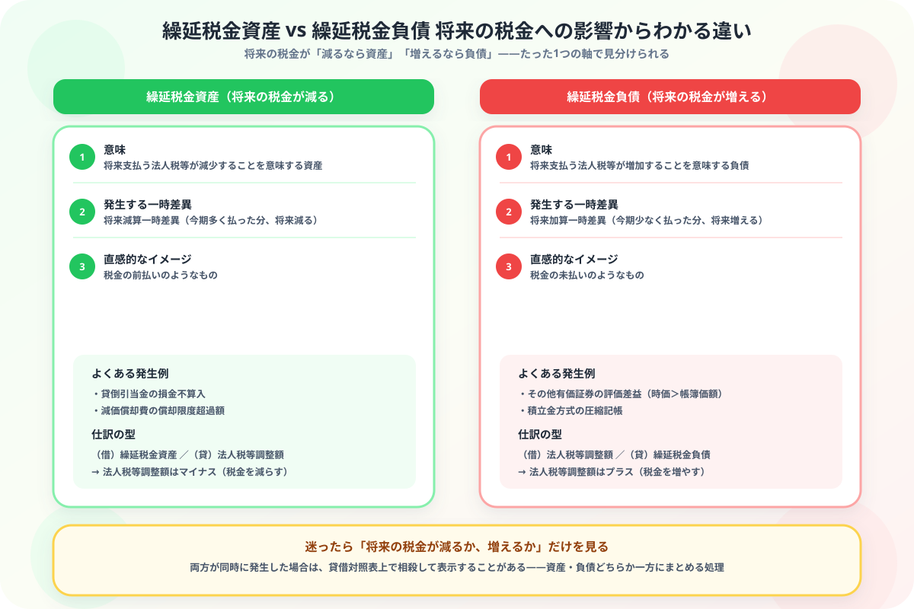

繰延税金資産と繰延税金負債の違いがわからない人へ
「将来の税金」からスッキリ整理する図解ガイド
- どちらも税効果会計で生まれる「将来の税金の調整額」——だから混同しやすい
- 本質の違いは将来の税金が減るか、増えるか——資産は減る、負債は増える
- 繰延税金資産は将来減算一時差異から、繰延税金負債は将来加算一時差異から生まれる
- 「税金の前払いなら資産」「税金の未払いなら負債」と考えると直感的に判断できる
こんにちは、大谷です！
税効果会計を勉強していて、「繰延税金資産」と「繰延税金負債」が出てきたとき、「名前が対になってるのはわかるけど、結局どっちが資産でどっちが負債なんだっけ……」と毎回混乱していました。問題を解くたびに「あれ、このケースはどっちだった？」と教科書のページを行ったり来たりしていた記憶があります。
でも実は、判断基準はたった1つ。「将来の税金が減るか、増えるか」——これだけです。今日はこのシンプルな軸を、一緒に整理していきましょう！
また、記事の末尾のほうにある【いいねボタン】をポチッと押してもらえると、めちゃくちゃ嬉しいです！
❓ 将来の税金への影響の違い——「減るなら資産」「増えるなら負債」
繰延税金資産と繰延税金負債は、どちらも税効果会計によって生まれる勘定科目ですが、将来の税金に与える影響がまったく逆です。この1点を押さえるだけで、他のすべての違いが理解できます。

📝 ① 繰延税金資産が発生するときの仕訳——貸倒引当金の例
貸倒引当金の損金不算入額が100,000円あり、法定実効税率が30%だった。
| 借方 | 金額 | 貸方 | 金額 |
|---|---|---|---|
| 繰延税金資産 | 30,000 | 法人税等調整額 | 30,000 |
💰 ② 繰延税金負債が発生するときの仕訳——その他有価証券の例
その他有価証券（取得原価500円）の期末時価が600円になった。法定実効税率は30%。
| 借方 | 金額 | 貸方 | 金額 |
|---|---|---|---|
| その他有価証券 | 100 | 繰延税金負債 | 30 |
| その他有価証券評価差額金 | 70 |
🔍 ③ 見分け方の早見表——問題文のこの言葉を探す
| 状況 | 勘定科目 | 理由 |
|---|---|---|
| 貸倒引当金の損金不算入 | 繰延税金資産 | 会計上は費用済みだが税法上は未認定＝将来税金が減る |
| 減価償却費の償却限度超過額 | 繰延税金資産 | 同上（超過分は将来の損金として認められる） |
| その他有価証券の評価差益（時価＞帳簿価額） | 繰延税金負債 | 将来売却時に課税される含み益がある |
| 積立金方式の圧縮記帳 | 繰延税金負債 | 将来、圧縮した分の税金を追加で払う |
📊 ④ 両方発生したら？——相殺表示のルール
繰延税金資産と繰延税金負債が同時に発生した場合、貸借対照表上ではそれぞれを両建てで表示するのではなく、原則として相殺して表示します。
📋 まとめ：繰延税金資産 vs 繰延税金負債 早見表
「将来の税金が減るか、増えるか」——この1点で資産と負債はもう混同しません
丸暗記に頼らず、税金の前払い・未払いというイメージで考えれば、初見の問題でも判断できるようになります。この記事が「あ、そういうことか！」につながったら、僕の執筆のモチベーション維持のために、この下にある【いいねボタン】をポチッと押してもらえると、めちゃくちゃ嬉しいです！
Study Questで今日の学習時間を記録して、簿記2級マスターへの一歩を刻んでおきましょう。